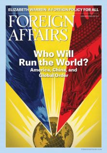

收录于合集

简 介
【 作者 】
马斯特罗（Oriana Skylar Mastro） , 美国乔治城大学安全研究专业副教授，美国企业公共政策研究会（AEI）访问学者，即将出版新书《谈判的代价：战争中和谈的阻碍》（The Costs of Conversation: Obstacles to Peace Talks in Wartime）。
【 文章来源 】
Foreign Affairs, January/February, 2019, pp.31-39.
【期刊介绍】
Foreign Affairs ，成立于1922年，是美国外交关系委员会发布的国际关系和美国外交政策的美国杂志，被誉为“美国最具影响力的外交政策杂志”之一。根据2014年的期刊引文报告（Web Of Science）, 该期刊的影响因子为2.009，在“国际关系”类别的85种期刊中排名第6。

【 整理 】 庞林立
【 审核 】 彭小朵
【文章框架】
简介
中国如何崛起
注意弥补漏洞
新竞争的出现
关键时刻的来临
简介
2018年9月，中国外交部部长王毅在美国对外关系委员会发表演讲时称，“中国不会也不可能重蹈国强必霸的覆辙”。正如他所言，几十年来，中国都在尽可能的对自身实力轻描淡写，以确保其他国家安心。中国领导人对和平崛起的一系列演讲表明，中国不希望替代美国成为世界体系的领导者，也无意于建立全球同盟网、实现军事实力的全球存在，抑或在世界范围内推广中国领导的国际秩序。
中国现行战略的矛盾之处在于：在印太区域内，中国希望完全驱逐美国，从而成为这一地区无可替代的政治、经济与军事霸权；而在世界范围内，虽然中国不愿成为领头羊，但他希望能够保持足够强大的力量，在必要关头与华盛顿政府正面对抗。中国领导人深谙“韬光养晦”之道，尽可能避免引起其他国家的负面回馈，在这一方针下，中国并未对美国进行直接挑战，并且很大程度复制了美国的世界秩序，并配合美国在全球的军事行动。然而，在不挑战现有霸权的前提下崛起存在临界点，中国当前已经到达了这个关键时期。
对于美国而言，新兴国家替代现有霸权的历史潮流并非不可阻挡，美国需要增加而非减少其对自由世界秩序的建设，强调而非抛弃美国价值观，确保美国的领导对其他国家有益，而非在“美国优先”的基础上重构国家战略。
中国如何崛起
纵观历史，每个即将成为霸权的国家都寻找到了新的崛起方式。中国也在寻找新的实力来源，并对构建权力的方式展开新的探索。
在政治领域，中国采用秘密外交与公共外交相结合的方式以团结或中和境外反对力量，如孔子学院的设立、英文传播媒介的推广、学术文化交流的开展甚至对他国大选的秘密介入都是获取权力的方式。在经济方面，中国政府对他国基础设施建设提供了大量的资金援助，最具代表性的就是2013年提出的“一带一路”战略。区别于西方对受援助国政府和市场经济条件的严格限制，中国的经济援助并无此类要求。尽管这一战略的推行不一定如西方观察者所认为的“抵消美国军事力量的全球存在”，但它的政治与经济影响力仍会影响美国实力的边界，如诱导非洲、中东、南亚等国借机否认美国在当地的军事设施使用权等。
除政治和经济领域外，中国崛起还包括了硬实力内涵：中国的反介入/区域拒止（“anti-access/anti-denial”, A2/AD）战略被视为创新妙举：一方面依靠相对较低成本的军事力量使美国在试图介入日本、菲律宾以及台海问题时陷入多难境地；同时，采用非军事手段与美国对抗，更容易占据话语主动权。这些策略使中国在面临政治与领土争端时获利颇丰，也不用担心小的争端引发更大规模的冲突。另外需要说明的是，自20世纪70年代中国领导人提出“四个现代化”以来，中国军事力量的发展一直被置于经济、政治与文化实力之后，以避免刺激美国。尽管A2/AD战略以限制美国干涉亚洲而在美国名声恶劣，但中国也确实刻意延缓了军事实力发展的速度：一直到20世纪90年代末中国才开始推动军队的现代化进程，并且将力量限制在解决台湾问题范围内，直到2012年中国才有了自己的航空母舰，2013年军队的结构改革才真正实行，以保证本国能够在印太区域掌握绝对主导。
注意弥补漏洞
中国积攒实力面临的巨大挑战之一是如何处理与美国主导下全球秩序的关系。中国政府当前的策略是支持某一领域的已有秩序，而在另外一些区域则试图推翻重建。这种有所挑选的路径反映了中国能够在现有世界秩序中获益，但同时中国也希望利用现有的体制漏洞来实现长远目标。
第一类漏洞体现在地理层面。 现有世界秩序并不能覆盖到全部国家，一部分国家主动放弃了对全球事务的参与，还有一些于美国而言处于低优先级。在这些地区，中国能够在不刺激美国的前提下获得外交成功。同时，中国还与伊朗、朝鲜等令美国反感的政权保持良好关系，进一步提升了其政治实力。
第二类漏洞体现在议题方面。 中国试图在一些现有秩序存在漏洞的议题上建立有利于自身的新标准和规范，例如在网络空间主权议题上，中国支持各国应当享有独立的网络空间主权，有权管理本国网络空间环境，并且通过世界互联网大会等场合向全球范围中国理念。在海洋议题上，中国指出当前国际海洋法存在一系列漏洞，以挑战美国所坚持的“航行自由”权利，并且获得了印度等美国盟友的支持。
新竞争的出现
当前中国的一系列战略表明，它已经不满足于在印太区域屈居第二，并且希望直接挑战美国在这一区域的地位。而对于美国来说，与中国竞争并不意味着“锱铢必较”，关注美国自身发展，扩大国家影响力和吸引力，相比于削弱中国来获得平衡的策略，更能够降低对手的威胁并避免不必要的冲突。
美国应当首先扩展其世界秩序的边界，从而减少中国可以利用的漏洞。当前特朗普政府世界观存在的重大问题是，世界需要更多的秩序，而非更少。美国应当积极建立新的机制来填补空白，并且实现旧机制的不断革新。对于中国主导建立的新机制，美国应当尽早加入以影响其后续发展，而非游离机制外试图破坏。美国的目标应当是建立一个更加广泛的综合性的世界秩序，从而使其无法被中国拖入非自由主义的方向。
美国同时应当提高经济参与。相比于中国与其他亚洲国家签订了大量双边贸易条约，美国在亚太地区的经济合作数量稀少。特朗普政府偏好贸易保护政策，而这只会给中国主导亚洲经济提供更大空间。
第三，美国需要重新思考提供经济援助的方式。在经援方面，美国需要提高其与盟友的合作，同时也要提升单边援助的数量，从而增加对中亚等地区的影响力。
第四，美国需要借鉴中国获取权力的方式，例如面对伊朗、朝鲜等国时，既需要增加往来机会，同时也要将双边关系从外交领域深化到个人之间的往来。在处理军事关系时，应当利用航空展、军舰访问甚至军售等方式展现美国与他国交好的承诺。此外，美国还应通过提高情报共享、制定应急计划等方式做好冲突预防工作。
最后，美国政策制定者应当思考的是，美国为维持亚洲主导地位愿意付出怎样的代价，以及为了维护这一地区非盟友国家免受威胁，怎样的牺牲才是合理的。
关键时刻的来临
大国之间的竞争从来不只是经济与军事力量的对抗。为了赢得竞争，美国同时需要维护其价值观。尽管中国在亚洲地区推行的外交政策颇有成效，但也存在“阿喀琉斯之踵”，即中国领导人无法说服其他国家，中国所推行的世界秩序对除了中国以外的国家有利。这也是为何中国当前的合作伙伴都是相对较弱的、容易被控制的国家。
美国曾经选择的领导世界的道路是对其他国家也同样有益的，所以美国不应当放弃其原有的路径。华盛顿政府应当继续支持自由主义世界秩序和国际机制，为保卫其盟友与伙伴投入更多资源，在提供经济援助时重“质”不重“量”，以确保更多人能够从中获益。美国成为全球领导者从来不是因为其倡导“美国第一”，而是其思考的全球化。只有提高美国自由主义价值观的传播范围，美国才能够真正应对来自中国的挑战。
点击“ 阅读原文 ”可获取原文pdf版
更多阅读
国政学人 （ID：guozhengxueren)
为方便学人及时阅读高质量文章
别忘把国政学人设置 星标 哦~